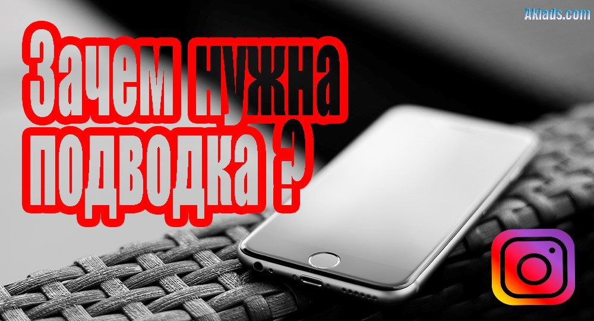
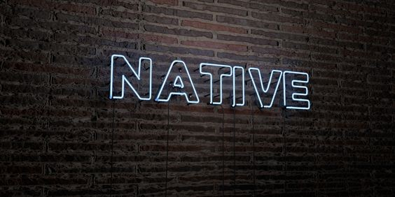
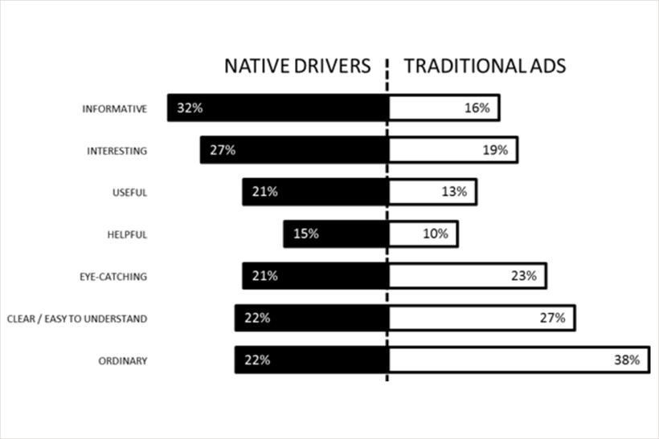
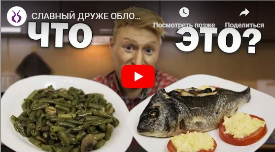
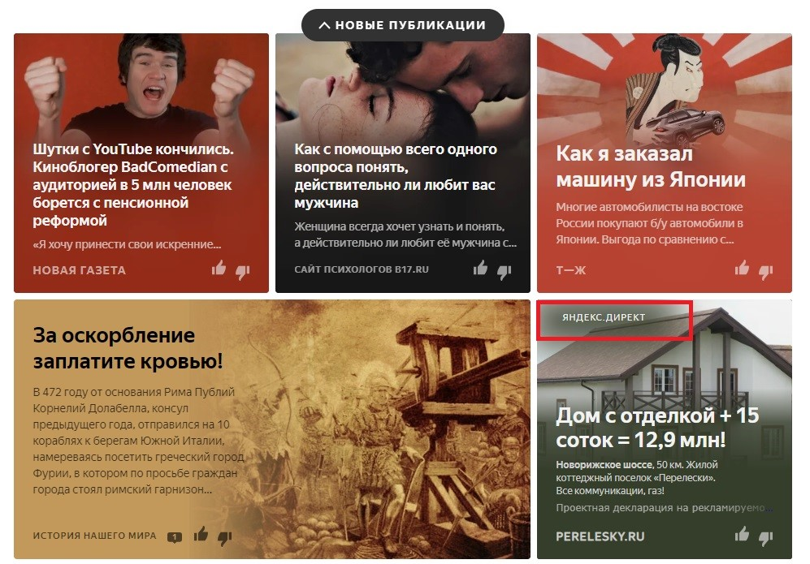

Чеклист
Создание подводок для рекламы у блогеров.
Что такое подводка в инстаграм к рекламе?
Ее можно охарактеризовать как предварительный один или несколько пабликов (сообщество в соц. сетях) которые привлекают интерес подписчиков, подготавливая их к рекламному посту. Подводку можно использовать как в ленте, так и в сторис, но в последнем он все же работает более эффективно. Ее функция – подготовить пользователя соцсети Инстаграм к основной информации, которая будет выложена в дальнейших пабликах.
Подводка – это одна или несколько историй, в которых блоггер плавно подводит подписчиков к нужной теме. Например, рассказывает о своих вопросах в юридической сфере для того, чтобы в следующей stories дать контакт «своего» юриста. Часто последней в серии этих сторис ставят «макет»: это видео, которое присылает сам рекламируемый. Вам нужно лишь выложить его в сторис, добавив отметку нужного аккаунта через символ @.

Публикация - подводка не должна быть слишком продолжительной, ее главная задача – привлечь внимание подписчиков. Она должна подымать такую проблему, которая волнует целевую аудиторию. Поэтому в такой истории важно подбирать такие слова, которые смогут «зацепить» человека. Использование одной подводки перед рекламным объявлением обычно не так эффективно, следует применять 2-3 для того, чтобы удержать интерес потенциального предложения подольше. После этого стоит публиковать креативы, которые будут логическим продолжением подводок и как следствие, должны решать проблемы, поднятые в них.
Часто подводки используются для гостевого поста. Суть их заключается в том, чтобы ненавязчиво прорекламировать какой-то аккаунт, товар или услугу. Такие публикации вызывают доверие у подписчиков. Они могут размещаться в ленте в неограниченном количестве, притом не создавая ощущения спама.
В какой-то степени многие шаблоны для сторис могут служить и подводками к рекламным объявлениям.
Кто ты, реклама, не в лоб?
Любая реклама, которая действует в лоб, проигрывает в эффективности естественной заинтересованности пользователей контентом. Это давно уже поняли все крупные бренды, поэтому нативная реклама стала настолько популярным явлением, что уже трудно отличить – читаешь ты интересную статью или уже погружаешься в какой-либо проект. А дальше всё зависит от этики компании и качества продукции. Если и то и другое на высоте, то у клиента формируется положительное мнение о бренде. В противном случае возникает чувство, будто вас обманули.
Поэтому нативная реклама – это инструмент продвижения, который нужно использовать аккуратно ввиду его большой силы воздействия на аудиторию.

Определение native advertising в переводе означает «естественная» реклама, то есть такая форма раскрутки, которая не использует прямые или косвенные призывы к покупке. Нативный материал – это полноценный контент, имеющий все характеристики платформы, где он размещается. В соцсети – интересный пост, на блоге – статья, на видеохостинге – ролик. Нативная реклама по своей идеи не должна вызывать у пользователей отторжения, эффекта баннерной слепоты.
Если вы думаете, что такой подход принесет только слив бюджета, то ошибаетесь. Сегодня все мировые бренды, компании средней руки и даже малый бизнес стараются использовать нативную рекламу чаще обычной. Приведем несколько статистических данных за 2015-2018 годы:
-
65% медиа брендов, издательств с большим интересом выделяют места под натив, чем под баннеры.
-
70% производителей, корпорации создают собственные каналы продвижения с помощью естественной вовлеченности.
-
Соцсети и мессенджеры транслируют 75% native advertising, вытесняя за борт навязчивые предложения.
Нативная реклама имеет четыре ключевых отличия – релевантная опыту/интересу пользователя, не навязчивая, полезная информация, не требует интерактива.
Для чего применять этот формат?
Нативная реклама сегодня это способ естественного взаимодействия аудитории с бизнесом. От навязчивости посланий все очень устали. Первое желание, которое возникает при контакте с баннерным форматом – быстрее закрыть предложение. Цифры статистики в пользу натива:

Информативность 32% против 16%, интерес 27% против 19%, польза 21% против 13%.
Примерно также обстоят дела и в стане рекламодателей – нативный формат рекламы обходит по эффективности баннеры и «джинсу» - предоплаченный материал со скрытой целью. Основная задача натива заключается в увеличении вовлеченности пользователей самим материалом, а уже потом в повышении продаж.
Виды
Секрет успеха «нативки» в цифровом пространстве прост – она делает упор на полезность контента и ставит интересы пользователей на первое место. Это то, что хочет потребитель. Нативная реклама имеет три основных формата:
-
Спонсорский или заказной контент. Материал обычно имеет титульного спонсора, например, бренд или торговую марку. Размещается он на каком-либо медиаресурсе «маскируясь» под формат площадки – соцсети, сайт, видеоблог. Самый дорогой вариант размещения – это нативка в фильмах, сериалах. Например, Джеймс Бонд ездит в фильме на новой марке BMW Z3, а Мартин в фильме «Назад в будущее» естественным образом рекламирует кроссовки Найк.
Суть в том, что зрители увлечены сюжетом, сочувствуют главному герою и на подсознательном уровне сопоставляют его образ с продуктом бренда. Соответственно продажи автомобилей и кроссовок увеличились в несколько раз. Бюджетный вариант – размещение постов, статей в тематических блогах, соцсетях. Тут также важно умело вплести нативку в формат сообщества, чтобы спонсорское предложение не выглядело «белой вороной».
-
Рекомендованный контент. Это перечень, подборка, список рекомендаций к прочтению статей на каком-либо медиаресурсе. Подобный формат хорошо заходит в мобильных приложения, программах, играх. Одной из специализированных платформ для размещения рекомендованного контента является MyTarget, которая через специальный виджет транслирует подборку на сторонних площадках.
-
Посты, статьи в соцсетях и блогах. Здесь нативная реклама подстраивается под формат материалов площадки. Например, пользователь листает новостной ленту во Вконтакте или Инстаграм и видит спонсорские посты, нацеленные на конкретную ЦА. Например, мы часто публикуем на профильной площадке vc.ru полезные статьи из опыта работы. Это интересно и полезно к прочтению, а также работает на узнаваемость компании.

Как использовать?
Сегодня основной площадкой размещения нативки выступает Интернет, иногда можно встретить её виды в печатных изданиях, на баннерах, ТВ. Если рассматривать цифровое пространство, то можно выделить несколько видов:
-
Соцсети. Сюда входят закрытые, открытые и гибридные площадки. В первом случае материалы распространяются в рамках узкоспециализированного сообщества, не выходя за пределы конкретной сети. Например, посты в Facebook и ВК, Инстаграм и нативная реклама в Ютуб.
-
Профильные площадки, тематические сайты, блоги. Нативная реклама в виде контента, как минимум, интересна пользователю и имеет большое поле для экспериментов. Например, можно написать полезную статью по теме, как выбрать Айфон 10, снабдив её фотографиями, видео, примерами. Заинтересованные люди обратятся в ваш салон.
-
Поисковые системы, Яндекс.Дзен, Гугл и Яндекс также используют натив, но он маскируется под формат контекстных объявлений. Зачастую, пользователи не видят никакой разницы между оплаченным предложением и естественной выдачей. Нативная реклама – примеры в Дзен.

Как составить план использования нативной рекламы в продвижении бизнеса, продуктов?
Алгоритм:
-
Определите, какие платформы предпочитает целевая аудитория;
-
Уточните, можно ли довести информацию самим или стоит подключить партнеров: лидеров мнений, блогеров и других;
-
Проверьте, можно ли адаптировать контент так, чтобы он вписался в формат площадки;
-
Рассчитайте стоимость создания и размещения;
-
Подумайте, как измерить отдачу РК;
Нативная реклама, как и любой другой вид продвижения в сети требует оценки эффективности. Для измерений используются следующие метрики: CTR, вовлеченность, время просмотра страницы с контентом, количество лайков и репостов, конвертация посетителей в лидов, рост продаж.
Основное, что нужно запомнить:
-
Пост, статья или любой иной контент, претендующий на звание нативки должен быть интересен пользователю, органично вписываться в формат площадки и не вызывать отторжения. Однако нативная реклама должна иметь пометку, что это оплаченный контент.
-
Нативка не должна содержать призыва к действию в явной форме.
-
Нативная реклама должна иметь характеристики вирусного поста, чтобы у пользователей появилось желание распространять материал по собственному усмотрению, бесплатно. Эффект «сарафанного радио».